유통관리사-1급 (2022-08-20 기출문제)
1과목: 유통경영
1. 글상자의 괄호 안에 공통적으로 들어갈 용어로 가장 옳은 것은?
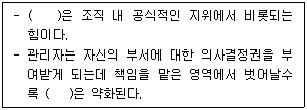
- 준거력(referent power)
- 합법력(legitimate power)
- 보상력(reward power)
- 강제력(coercive power)
- 전문력(expert power)
(정답률: 알수없음)

2. 엘튼 메이요(Elton Mayo)의 호손(Hawthorne)실험 결과와 관련 있는 내용으로 가장 옳은 것은?
- 근로자들은 금전적 요인에 의해서 동기부여 된다.
- 근로자들의 대우를 향상시키면 생산성이 향상될 것이다.
- 각 근로자들은 한 명의 상관에게 보고할 의무를 가져야 한다.
- 근로자들은 누군가가 관심을 가지고 있기에 더 열심히 일하기도 한다.
- 근로자들에게는 적절한 휴식과 최적의 작업환경이 필요하다.
(정답률: 알수없음)
3. 조직몰입(organizational commitment)에 대한 설명으로 가장 옳지 않은 것은?
- 정서적 몰입, 지속적 몰입, 규범적 몰입 등으로 구성된다.
- 조직을 이탈할 때의 엄청난 부담 때문에 조직에 몰입하는 것을 정서적 몰입이라 한다.
- 규범적 몰입이란 심리적 부담이나 의무감 때문에 몰입하게 되는 경우를 말한다.
- 직장 동료들이나 상사로부터의 압력에 의한 부담은 규범적 몰입에 속한다.
- 자신의 회사에 대해 자부심을 갖는 것은 정서적 몰입에 해당한다.
(정답률: 알수없음)
4. 조직에 관한 설명으로 가장 옳지 않은 것은?
- 관료제는 환경이 안정적이고 정태적인 경우에 적합하다.
- 유기적 조직은 기계적 조직에 비해 전문화(분화) 정도가 낮다.
- 기계적 조직은 유기적 조직에 비해 공식화 정도가 낮다.
- 팀조직은 환경변화를 민감하게 감지하고 효과적으로 대응하는데 유리하다.
- 임시특별조직(adhocracy)은 관료제에 비하여 유기성, 동태성, 비일상성을 강조하는 조직구조이다.
(정답률: 알수없음)
5. 종업원에게 공정한 보상시스템을 설계할 경우 고려해야할 사항을 글상자의 괄호 안에 들어갈 순서대로 나열한 것으로 가장 옳은 것은?
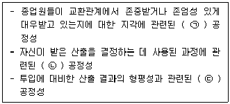
- ㉠ 절차, ㉡ 상호작용, ㉢ 분배
- ㉠ 상호작용, ㉡ 절차, ㉢ 분배
- ㉠ 분배, ㉡ 절차, ㉢ 상호작용
- ㉠ 분배, ㉡ 상호작용, ㉢ 절차
- ㉠ 상호작용, ㉡ 분배, ㉢ 절차
(정답률: 알수없음)
6. 리더십이론에 대한 설명으로 가장 옳지 않은 것은?
- 상황적합성이론: 리더의 성공은 상황특성과 리더 특성간의 상호작용관계에 달려있다.
- 경로-목표이론: 리더의 역할은 부하직원들이 성공할 수 있도록 도와주는데 있다.
- 리더 구성원 교환모형: 리더십을 리더와 부하 간의 상호관계의 질을 중심으로 이해하는 과정으로 개념화한 이론이다.
- 진정성 리더십이론: 리더는 부하에게 진정성 있게 다가가며, 영감을 불러일으키며 지적 자극을 주고, 능력이상의 업무를 하도록 이끌어 낼 수 있어야 한다.
- 거래적 리더십이론: 리더는 구성원의 욕구를 파악하고, 주어진 성과의 달성정도에 따라 그들의 욕구를 충족시켜, 조직의 내부적인 안정과 유지에 초점을 맞춘다.
(정답률: 알수없음)
7. 직무평가(job evaluation)를 위해 사용할 수 있는 방법으로 가장 옳지 않은 것은?
- 서열법
- 요소비교법
- 점수법
- 행동기준평가법
- 분류법
(정답률: 알수없음)
8. 저비용전략과 차별화전략은 동시에 추구할 수 없다는 주장과 가능하다는 주장이 대립하고 있다. 차별화와 저비용을 통해 경쟁이 없는 새로운 시장을 창출하자는 주장 또는 설명으로 가장 옳은 것은?
- 한계생산성체감의 법칙
- 블루오션전략
- 본원적 경쟁전략
- 가치영역이론
- 수확체증의 법칙
(정답률: 알수없음)
9. 보상관리에 관한 설명으로 가장 옳은 것은?
- 기업의 임금수준을 결정하는 내부요인으로 기업의 지불능력, 직무의 가치, 노동시장에서의 평균 임금수준 등이 있다.
- 직무급의 임금은 종업원의 능력, 연공, 학력, 성과에 의해 결정된다.
- 임금의 내부공정성이란 해당 기업의 임금수준과 타기업의 임금수준과의 공정성 여부를 말한다.
- 직능급을 도입할 경우, 종업원의 성장욕구를 자극하고 충족시킬 기회를 주며, 동기부여를 할 수 있다는 장점이 있다.
- 럭커 플랜(Rucker plan)은 개인성과급제도의 모델이다.
(정답률: 알수없음)
10. 버클린(Bucklin)이 주장한 규범적 유통경로(normative distribution channel)와 관련된 서비스 기대수준(ELSO: expected level of service out)에 대한 설명으로 옳지 않은 것은?
- 제품의 다양성(product variety)을 적게 원할수록 ELSO가 낮다.
- 1회 구매량(lot size)의 크기가 작을수록 ELSO가 높다.
- 대기시간(waiting time)이 짧기를 바랄수록 ELSO가 높다.
- 부수적 서비스를 많이 바랄수록 ELSO가 높다.
- 시장 분산(market decentralization)이 잘되어 있기를 원할수록 ELSO가 낮다.
(정답률: 알수없음)
11. 기업윤리에 대한 설명 중에서 가장 옳지 않은 것은?
- 기업윤리란 기업이 사회의 구성원으로서 마땅히 지켜야 할 도리를 말한다.
- 기업경영에서 의사결정 시 고려해야 할 도의적 가치와 옳고 그름을 판별하는 규범이기도 하다.
- 기업에 대한 일반 대중의 기대가 높아진 것도 기업윤리의 등장 배경 중 하나이다.
- 현대 사회에서 기업이 비윤리적 행동을 하게 되는 일반적인 동기로는 자사의 이익을 위한 타기업과의 치열한 경쟁, 기업의 목표와 개인의 가치 상충 등을 들 수 있다.
- 기업이 고객과 관련해서 기업윤리에서 다뤄야 할 문제에는 탈세, 내부자거래, 고용차별 등이 있다.
(정답률: 알수없음)
12. 다양한 장애요인 때문에 조직 내 의사소통이 정확하게 이루어지지 않을 수 있다. 조직 내 의사소통의 장애를 극복하는 방안으로 가장 옳지 않은 것은?
- 피드백의 활용
- 사용 언어의 단순·명확화
- 적극적인 경청
- 공식 커뮤니케이션의 활용
- 선택적 지각의 강화
(정답률: 알수없음)
13. 매트릭스 조직(matrix organization)에 대한 설명으로 옳지 않은 것은?
- 기능적 부문화와 제품별 부문화를 결합한 형태라 할 수 있다.
- 명령의 통일성 원칙이 파괴되기 쉬운 조직구조이다.
- 정보의 호환성이 떨어지고, 조직내에서 정보가 신속하게 공유되지 못하는 단점이 있다.
- 복잡하고 상호의존적인 활동이 필요할 때 조율이 용이하다는 장점이 있다.
- 환경변화가 빨라서 신축성과 적응성이 요구되는 상황에서 신규 사업 등을 추진하는 데 도움이 된다.
(정답률: 알수없음)
14. 종업원의 업무의욕을 향상시키기 위한 동기 이론(motivation theory) 중 동기부여되는 과정에 초점을 맞춘 이론으로 가장 옳은 것은?
- 욕구단계이론
- ERG이론
- 성취동기이론
- 동기-위생요인이론
- 기대이론
(정답률: 알수없음)
15. 기업차원에서의 노동소득분배율에 관한 설명으로 옳은 것은?
- 기업의 평균생산비용에서 인건비가 차지하는 비율
- 기업의 부가가치에서 인건비가 차지하는 비율
- 기업의 매출에서 인건비가 차지하는 비율
- 기업의 매출원가에서 인건비가 차지하는 비율
- 기업의 총비용에서 인건비가 차지하는 비율
(정답률: 알수없음)
16. 국내 와인 소매시장의 급성장 추세에 대응하여 국내유통업체가 외국 현지 와이너리의 인수를 추진한다고 하자. 현지 양조장에서 생산한 와인을 수입해서 판매하는 것을 넘어 생산까지 직접 수행하려는 이러한 성장전략의 명칭으로 가장 옳은 것은?
- 다각화전략
- 내적성장전략
- 수평통합전략
- 수직통합전략
- 신제품개발전략
(정답률: 알수없음)
17. 아래 글상자의 자료를 통해 손익분기점의 매출액을 구한 것으로 옳은 것은?
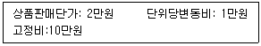
- 10만원
- 20만원
- 30만원
- 40만원
- 50만원
(정답률: 알수없음)
18. “최저임금법”(법률 제17326호, 2020.5.26., 타법개정)의 내용으로 옳지 않은 것은?
- 근로자에 대하여 임금의 최저수준을 보장하여 근로자의 생활안정과 노동력의 질적향상을 꾀함으로써 국민경제의 건전한 발전에 이바지하는 것을 목적으로 한다.
- 사용자는 최저임금의 적용을 받는 근로자에게 최저임금액 이상의 임금을 지급하여야 한다.
- 사용자는 종전의 임금수준이 최저임금보다 높을 경우, 이 법에 따라 종전의 임금수준을 낮출 수 있다.
- 고용노동부장관은 매년 8월 5일까지 최저임금을 결정하여야 한다.
- 최저임금은 근로자의 생계비, 유사 근로자의 임금, 노동생산성 및 소득분배율 등을 고려하여 정한다.
(정답률: 알수없음)
19. 매출 목표 수립 시 필요한 자료로 가장 옳지 않은 것은?
- 전년도 매출액 동향
- 회사의 경영계획
- 경쟁사 동향
- 전년도 근로자 수
- 경제 성장률
(정답률: 알수없음)
20. 아래 글상자의 괄호 안에 들어갈 용어를 순서대로 나열한 것으로 가장 옳은 것은?
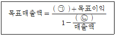
- ㉠ 고정비, ㉡ 변동비
- ㉠ 고정비, ㉡ 판매관리비
- ㉠ 변동비, ㉡ 고정비
- ㉠ 변동비, ㉡ 구입원가
- ㉠ 판매관리비, ㉡ 구입원가
(정답률: 알수없음)
2과목: 물류경영
21. 해상으로 수입되는 화물의 관리단계를 순서대로 나열한 것으로 옳은 것은?
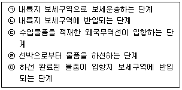
- ㉠ - ㉡ - ㉢ - ㉣ - ㉤
- ㉡ - ㉢ - ㉣ - ㉤ - ㉠
- ㉢ - ㉣ - ㉤ - ㉠ - ㉡
- ㉣ - ㉤ - ㉠ - ㉡ - ㉢
- ㉤ - ㉠ - ㉡ - ㉢ - ㉣
(정답률: 알수없음)
22. 아래 글상자의 물류 활동에 대한 설명 중 옳지 않은 내용을 모두 나열한 것은?
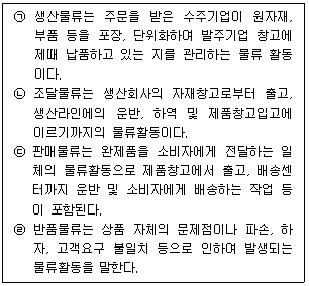
- ㉠, ㉡
- ㉠, ㉢, ㉣
- ㉠, ㉣
- ㉢, ㉣
- ㉡, ㉣
(정답률: 알수없음)
23. 포장 표준화의 4가지 핵심 요소에 해당되는 것을 모두 나열한 것으로 가장 옳은 것은?
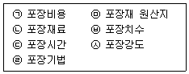
- ㉠, ㉣, ㉤, ㉥
- ㉡, ㉣, ㉤, ㉦
- ㉠, ㉢, ㉤, ㉥
- ㉣, ㉤, ㉥, ㉦
- ㉡, ㉣, ㉥, ㉦
(정답률: 알수없음)
24. 국제물류의 환경변화에 대한 일반적인 설명으로 가장 옳지 않은 것은?
- 친환경 녹색물류에 대한 중요성이 증가하고 있다.
- 위험요인을 사전에 제거하기 위해 물류보안의 적용범위가 확대되고 있다.
- IoT, AI 같은 정보기술이 적용되어 고도화되고 있다.
- 고객서비스 수준의 향상을 위해 물류기업 간 제휴나 M&A보다 각자 독자적으로 노선구축을 하는 것이 증가하고 있다.
- 고부가가치 창출을 위해 특수한 형태의 물류 서비스가 성장하고 있다.
(정답률: 알수없음)
25. 항공운송사들이 국제선 운임이나 화물 요율 등에 대해 항공사의 의견을 수렴, 조정하기 위해 설립한 국제항공운송협회는 무엇인가?
- ISO
- ILO
- IATA
- ICC
- ILA
(정답률: 알수없음)
26. 공급자 측면에서 e-마켓플레이스를 활용함으로써 생기는 이점에 대한 설명으로 옳지 않은 것은?
- 온라인으로 주문을 처리함으로써 판매비용을 줄일 수 있다.
- 공급자들은 시장에 대한 정보를 확보할 수 있지만 수익창출의 기회를 얻을 수는 없다.
- 소량 구매주문을 집적하는 효과를 가짐으로써 소량구매자들과도 경제적으로 거래를 할 수 있다.
- 공급자들은 전통적인 마케팅 방식에 비해 훨씬 더 낮은 비용으로 신규 구매자들을 탐색하고 이들에게 접근할 수 있어 고객확보 비용을 줄일 수 있다.
- 공급자는 구매자와 온라인 협력을 통하여 상호 간의 관계를 향상시킬 수 있다.
(정답률: 알수없음)
27. ICD에 대한 내용으로 옳은 것을 모두 나열한 것은?
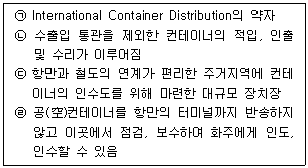
- ㉠
- ㉡
- ㉢
- ㉣
- ㉡, ㉢
(정답률: 알수없음)
28. 복합운송에 관한 설명으로 가장 옳은 것은?
- 운송인이 화물을 인수한 지점에서 인도지점까지 복합운송 계약에 의거하여 적어도 3개 이상의 동일 운송수단을 활용한 화물운송을 말한다.
- 통운임(through rate)은 구간별로 다른 운송사들이 화주에게 따로따로 부과하는 개별운임을 말한다.
- birdy back 방식은 화물을 항공과 선박을 이용해 운송하는 것을 말한다.
- piggy back 방식은 화물을 트럭과 선박을 이용해 운송하는 것을 말한다.
- 컨테이너화로 인해 각 운송수단이 유기적으로 결합되어 궁극적으로 door to door 운송이 가능해졌다.
(정답률: 알수없음)
29. 아래 글상자에서 설명하는 하역합리화의 원칙으로 가장 옳은 것은?
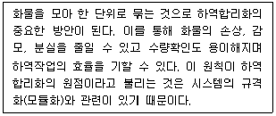
- 시스템화
- 인터페이스
- 기계화
- 활성화
- 단위화
(정답률: 알수없음)
30. 아래 글상자에서 창고관리시스템(WMS: Warehouse Management System)의 효과로 옳은 것을 모두 고르면?
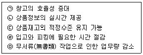
- ㉠
- ㉠, ㉡
- ㉠, ㉡, ㉢
- ㉠, ㉡, ㉢, ㉣
- ㉠, ㉡, ㉢, ㉣, ㉤
(정답률: 알수없음)
31. 보관물류의 효율화를 위한 각종 원칙에 대한 설명으로 가장 옳지 않은 것은?
- 회전대응보관의 원칙은 출하빈도가 높은 제품을 출입구쪽에 보관하는 것이다.
- FIFO의 원칙은 먼저 보관한 것을 먼저 꺼내는 것이다.
- 중량특성의 법칙은 제품을 중량별로 구분해서 보관하는 것이다.
- 유사성의 원칙은 물품의 형상 특성에 맞게 보관방법을 달리하는 것이다.
- 높이쌓기의 원칙은 팔레트나 렉을 이용하여 높이 쌓아서 보관하는 것이다.
(정답률: 알수없음)
32. 변동환율제에서 심한 환율변동으로 선사가 입을 수 있는 환차손을 화주에게 부담시키는 할증료로 옳은 것은?
- Bulky Cargo Surcharge
- Optional Surcharge
- Congestion Surcharge
- Bunker Adjustment Surcharge
- Currency Adjustment Surcharge
(정답률: 알수없음)
33. 물류비에 대한 내용 설명으로 가장 옳지 않은 것은?
- 상품, 용기, 포장자재 등의 매입처로부터 발주자인 도·소매업자에게 반입될 때까지의 물류원가는 도·소매업자에게는 조달 물류비에 속한다.
- 용기, 파렛트, 컨테이너 등의 회수 물류비는 역 물류비에 속한다.
- 기업이 고객에게 제품을 출하하여 인도할 때까지의 물류원가는 판매 물류비에 속한다.
- 포장, 수송, 보관 등의 업무에 수반하여 제품을 동일시설 내에서 상하, 좌우 등으로 이동시키는 데 필요로 하는 비용은 유통가공비에 속한다.
- 제조, 도·소매 등의 화주기업이 자가용 수송수단을 이용하여 수송할 때 소비하는 물류비용은 자가 수송비에 속한다.
(정답률: 알수없음)
34. 아래 글상자의 괄호 안에 들어갈 물류의 기본적인 효용에 관한 용어를 순서대로 옳게 나열한 것은?
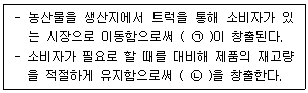
- ㉠ 소유효용, ㉡ 장소효용
- ㉠ 장소효용, ㉡ 시간효용
- ㉠ 형태효용, ㉡ 소유효용
- ㉠ 형태효용, ㉡ 장소효용
- ㉠ 시간효용, ㉡ 장소효용
(정답률: 알수없음)
35. 물류의 총비용개념을 적용한 경우로 가장 옳지 않은 것은?
- 물류센터의 위치를 결정하는 경우, 운송비용과 재고비용의 합이 최소화되는 지점을 선택한다.
- 개별활동비용에 초점을 두기보다 물류활동 전체 비용을 최소화하는 것을 목표로 한다.
- 재고비용과 생산비용의 총합을 고려해 제품생산기간을 결정한다.
- 판매손실비용과 재고비용의 합이 최소화되는 지점에서 안전재고 수준을 결정한다.
- 낮은 운송비용이나 빠른 서비스 등 개별물류활동에 집중하는 것이 물류총비용 측면에서 최적의 방법이 된다.
(정답률: 알수없음)
36. 물류일괄대행 서비스를 일컫는 용어로서, 물류를 수행하는 업체가 유통사 측의 판매상품의 입고, 분류, 재고관리, 품질관리, 배송 등 고객에게 도착하는 물류 전 과정을 일괄처리 해 주는 것을 무엇이라고 하는가?
- 풀필먼트(fulfillment)
- 3PL(3rd Party Logistics)
- Hub and spoke system
- 드랍 쉬핑(Drop shipping)
- Last mile delivery
(정답률: 알수없음)
37. ISO 표준화위원회의 표준화 원리에 대한 설명으로 옳지 않은 것은?
- 규격은 일정 간격으로 다시 검토하고 필요에 따라 개정한다.
- 표준화는 경제활동이며 사회활동이고 협력에 의해 추진되어야 한다.
- 제품의 성능을 규정할 때에는 적합성의 검사방법을 사양에 포함시켜야 한다.
- 표준화는 본질적으로 단순화이며 장래의 무질서를 예방하려는 것이 목적이다.
- 강제규정은 규격의 성질, 공업화의 정도, 사회의 법률 및 관습 등을 전혀 고려할 필요가 없다.
(정답률: 알수없음)
38. 물류표준화에 대한 설명으로 가장 옳지 않은 것은?
- 물류활동의 안정성과 합리성을 높여준다.
- 작업의 자동화, 기계화를 위한 선행조건이 된다.
- 물류활동 관련 규격의 표준을 설정한다.
- 파렛트, 보관시설, 트럭 적재함 등의 하드웨어적인 부문을 대상으로 하므로 소프트웨어적인 부문은 고려되지 않는다.
- 기본적인 포장 표준화뿐만이 아닌 안전기준과 환경기준까지 대상으로 한다.
(정답률: 알수없음)
39. 물류정책기본법(시행 2021. 12. 30., 법률 제17799호, 2020. 12. 29., 타법개정) 상 제11조 국가물류기본계획의 수립에 관한 설명으로 가장 옳지 않은 것은?
- 국토교통부장관 및 해양수산부장관은 국가물류정책의 기본방향을 설정하는 10년 단위의 국가물류기본계획을 5년마다 공동으로 수립하여야 한다.
- 물류기능별 물류정책 및 운송수단별 물류정책의 종합·조정에 관한 사항을 포함한다.
- 국제물류를 제외한 국내물류의 촉진·지원에 관한 모든 사항을 포함한다.
- 물류인력의 양성 및 물류기술의 개발에 관한 사항을 포함한다.
- 물류시설·장비의 수급·배치 및 투자 우선순위에 관한 사항을 포함한다.
(정답률: 알수없음)
40. 유통물류센터 정보시스템에 관련된 내용으로 옳지 않은 것은?
- 시스템 상의 재고와 실제 보유 재고가 일치해야 한다.
- 품절이나 결품 없이 재고회전율을 향상시키면서 재고를 최소한으로 줄일 수 있는 보충시스템을 구축해야 한다.
- 작업자의 피킹 생산성을 높일 수 있게 하는 시스템이어야 한다.
- 각 공정의 비용을 파악하고 물류비 전체를 절감하는 데 도움을 주는 시스템이어야 한다.
- 피킹실수를 방지하는 시스템은 구축해야 하지만 검품시스템은 구축할 필요는 없다.
(정답률: 알수없음)
3과목: 상권분석
41. 소매점포의 상권분석에 점차 활용도가 높아지고 있는 지리정보시스템(GIS)의 주요 기능으로 볼 수 없는 것은?
- 버퍼링(buffering)
- 커버링(covering)
- 주제도 작성
- 데이터 및 공간조회
- 정보의 보완 및 수정작업
(정답률: 알수없음)
42. 도시단위의 상권분석과 같이 비교적 넓은 상권의 개략적인 수요를 측정할 때 유용하게 사용되는 구매력지수(BPI)를 계산하는 과정에서 필요하지 않은 자료로 가장 옳은 것은?
- 전체 지역의 소매매출액(retail sales)
- 해당 지역의 인구수(population) 비율
- 해당 지역의 소매매출액(retail sales) 비율
- 해당 지역의 소매점면적(sales space) 비율
- 해당 지역의 가처분소득(effective buying income) 비율
(정답률: 알수없음)
43. 소매포화지수(IRS)와 시장성장잠재력(MEP)에 대한 설명으로 옳은 것은?
- MEP는 어떤 지역범위내에서 특정 소매업종의 단위 매장면적당 잠재수요이다.
- MEP가 낮을수록 점포가 초과 공급되어 매력적인 시장이 아니라는 것을 의미한다.
- IRS가 크다는 것은 거주자의 역외구매 정도가 낮다는 것을 의미한다.
- IRS가 낮으면 시장의 포화정도가 낮아 아직 경쟁이 치열하지 않음을 의미한다.
- MEP는 지역시장의 미래 성장가능성을 추정할 수 있는 잠재력 측정 지표가 된다.
(정답률: 알수없음)
44. 상권 매력도를 평가하는 요인 중 하나인 역외구매(outshopping)에 대한 설명으로 가장 옳지 않은 것은?
- 해당지역에 거주하는 소비자들이 상권 외부지역에서 구매하는 현상을 말한다.
- 해당지역에서의 가구당(혹은 1인당) 예상지출액과 실제지출액의 차이를 유발한다.
- 해당지역과 타지역간의 소매점 마케팅능력 차이는 반영되지 않는다.
- 역외구매 현상이 활발하면 상권 내 신규수요창출 가능성이 크다고 볼 수 있다.
- 교통수단의 발달은 역외구매현상을 촉진한다.
(정답률: 알수없음)
45. 건축용지의 특성의 하나인 '획지'에 관한 설명으로 옳지 않은 것은?
- 획지는 건축용으로 구획정리를 할 때 단위가 되는 땅으로 직각형, 정형, 부정형 등이 있다.
- 각지는 획지 중에서도 2개 이상의 가로각(街路角)에 해당하는 부분에 접하는 토지를 의미한다.
- 각지는 접면하는 각의 수에 따라 2면각지, 3면각지 등으로 구분할 수 있다.
- 각지는 일반적으로 일조와 통풍이 양호하고 출입이 편리하며 광고선전의 효과가 높고 단위면적당 가격이 높다.
- 계통이 다른 도로에 면한 각지를 순각지라고 하며 그 중 3면가로각지는 3면이 가로에 접한 토지를 말한다.
(정답률: 알수없음)
46. 아래 글상자의 자료를 Reilly의 소매인력이론에 적용하여 추정한 C시에서 A시로 흡인되는 숫자로 가장 옳은 것은?
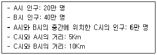
- 1만 명
- 2만 명
- 3만 명
- 4만 명
- 5만 명
(정답률: 알수없음)
47. 아래 글상자에서 괄호 안에 들어갈 입지조건을 평가하는 항목을 순서대로 나열한 것으로 가장 옳은 것은?
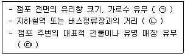
- ㉠ 인지성, ㉡ 접근성, ㉢ 홍보성
- ㉠ 가시성, ㉡ 접근성, ㉢ 인지성
- ㉠ 홍보성, ㉡ 인지성, ㉢ 접근성
- ㉠ 가시성, ㉡ 홍보성, ㉢ 접근성
- ㉠ 인지성, ㉡ 가시성, ㉢ 접근성
(정답률: 알수없음)
48. 상권분석 기법들 중에서 고객점표법(CST), 티센다각형(thiessen polygon), 컨버스의 분기점모델의 공통점으로 볼 수 있는 것은?
- 점포의 매출액 예측 방법으로 이용된다.
- 상권의 공간적 경계를 파악하는데 이용된다.
- 개별 소비자의 위치를 분석하는데 이용된다.
- 경쟁점의 영향력을 파악하는데 이용된다.
- 소비자를 대상으로 설문조사를 거쳐야 한다.
(정답률: 알수없음)
49. 상권분석시 고려해야 할 공간적 불안정성(spatial non-stability)에 관한 설명으로 가장 옳지 않은 것은?
- 소비자의 이질성으로 인해 공간상호작용모델의 모수들이 공간적으로 차이가 나는 것을 의미한다.
- 지역의 주변 거주자보다 중심 거주자의 경우에 거리 증감에 따른 효용감소효과 모수의 절댓값이 작은 경우도 여기에 해당한다.
- 고소득층 보다 상대적으로 자동차 소유비율이 낮은 저소득층은 근거리에 위치한 점포를 애용할 가능성이 높은 것도 여기에 해당한다.
- 지역별 교통상황의 차이나 점포의 밀도가 원인이 될 수 있으므로 세분시장별로 모델을 추정하는 것은 지양해야 한다.
- 공간적 불안정성이 크면 통계적 적합도가 높은 경우에도 분석 결과에 오차가 발생할 수 있다.
(정답률: 알수없음)
50. 회귀분석의 일반적 특성과 구분되는 단계적 회귀분석의 장점으로 가장 옳은 것은?
- 과거의 연구결과 혹은 분석자의 판단 등을 토대로 소매점포의 성과 결정에 중요해 보이는 소수의 변수를 도출할 수 있다.
- 상업시설의 운영성과에 영향을 주는 각 요소들의 상대적 영향력을 계량적으로 측정할 수 있다.
- 분석을 위해서는 많은 점포에 대한 자료가 필요하기 때문에 다수의 점포를 운영하는 체인소매점의 분석에 이용할 수 있다.
- 다중공선성의 문제를 해결하는 동시에 포함된 변수가 너무 많아 모델의 해석이 어려워지는 것을 방지할 수 있다.
- 경쟁업체 및 자사 전체의 네트워크를 충분히 고려하여 특정 점포나 부지를 고립적으로 평가할 수 있다.
(정답률: 알수없음)
51. 확률적 상권분석모델에서 활용가능한 상권내 점포들의 점포선택 등확률선(isoprobability contours)을 통해 파악할 수 있는 내용으로 가장 옳지 않은 것은?
- 점포별 상권 잠식 현상
- 소매점포의 경쟁자
- 유동인구의 흐름
- 1차상권, 2차상권, 한계상권의 범위
- 거리증가에 따른 점포선택확률 감소 현상
(정답률: 알수없음)
52. “유통산업발전법”[시행 2021.1.1.][법률 제17761호, 2020.12.29., 타법개정]에서 규정하는 대규모점포의 개설등록에 관한 내용으로 옳지 않은 것은?
- 대규모점포를 개설하려는 자는 영업 시작 전에 상권영향평가서 및 지역협력계획서를 산업통상자원부장관에게 제출하여야 한다.
- 각종 지자체장은 매장면적이 10분의 1이상 증가하는 전통상업지역내 대규모점포의 변경등록을 제한할 수 있다.
- 지역협력계획서에는 지역 중소유통기업과의 상생협력, 지역고용활성화 등의 사항이 포함될 수 있다.
- 상권영향평가서나 지역협력계획서가 미진할 때는 각종 지자체장은 그 사유를 명시하여 보완을 요청할 수 있다.
- 각종 지자체장은 점포소재지를 변경하려고 하는 전통상업지역내 대규모점포의 변경등록을 제한할 수 있다.
(정답률: 알수없음)
53. 우리나라의 인구주택총조사 자료를 통해 확인할 수 있는 광역 및 지역단위 상권 정보로서 가장 옳지 않은 것은?
- 1인가구의 비율
- 가구의 소득 분포
- 가구의 가족생애주기
- 인구의 단체 가입 활동
- 인구의 연령별 교육 수준
(정답률: 알수없음)
54. 소매점포의 상권범위를 유추하거나 매출액을 추정할 때 활용할 수 있는 Huff모델에 대한 설명으로 옳지 않은 것은?
- 분석과정에서 실제 소비자의 점포선택 자료를 활용하며 점포의 매력도와 통행거리를 주요 변수로 고려한다는 점에서 공간상호작용 모델의 하나로 볼 수 있다.
- 상권으로 추정되는 공간에 분포하는 개별 소비자들의 점포선택행동을 확률적 현상으로 보는 확률적 분석방법이다.
- 점포를 중심으로 형성되는 상권이 경쟁점포의 상권과 중복되지 않고 공간상에서 단절되어 단속적으로 형성된다고 가정한다.
- 각 소비자와 점포사이의 공간적 이동거리는 이동시간 자료로 대체하여 분석하기도 한다.
- 상권내 소비자들의 점포선택 행동을 추정하고 이를 근거로 각 점포별 점유율 및 매출액을 예측하는 상권분석기법이다.
(정답률: 알수없음)
55. 점포입지 결정과정에서는 부지의 특성과 건물구조 등 구체적 입지조건을 평가하게 된다. 이와 관련한 내용으로 가장 옳지 않은 것은?
- 일정 크기를 넘으면 점포의 면적이 증가해도 매출은 더 이상 효율적으로 증가하지 않는다.
- 점포의 주요 출입구 전면에 있는 단차는 소비자의 출입을 방해하는 장애물로 작용한다.
- 같은 면적이라면 점포의 깊이보다 정면너비가 더 큰 장방형 부지가 가시성 확보 차원에서 더 바람직하다.
- 건축선 후퇴(setback)는 점포의 가시성을 직접적으로 높이는 효과적인 방법이다.
- 점포의 구조적 형태가 직사각형이면 데드스페이스(dead space)의 발생가능성이 낮아 집기나 진열선반 등을 효율적으로 배치하기 쉽다.
(정답률: 20%)
56. 여러 개의 점포를 운영하는 체인형 소매업체는 새로운 시장에 진출하기 전에 기존시장을 포화시키는 출점전략을 실행하기도 한다. 기존시장 포화전략에 대한 설명으로 가장 옳지 않은 것은?
- 개별점포의 이익보다 체인 전체의 이익을 강조하는 전략이다.
- 체인수준에서의 광고, 물류 등과 관련된 규모의 경제가 증가할 수 있다.
- 점포수준에서의 고객서비스, 재고유지 등과 관련된 규모의 경제가 증가할 수 있다.
- 경쟁점포의 진입을 억제하거나 매출을 감소시키는 경쟁효과를 얻을 수 있다.
- 점포신설의 한계이익이 한계비용을 초과하는 한 논리적으로 타당한 전략이다.
(정답률: 알수없음)
57. “상가건물 임대차보호법” [시행 2022.1.4.] [법률 제18675호, 2022. 1. 4., 일부개정]에서 임대인은 임차인이 임대차기간이 만료되기 6개월 전부터 1개월 전까지 사이에 계약갱신을 요구할 경우 정당한 사유 없이 거절하지 못한다고 규정하면서 몇 가지 예외를 인정하고 있다. 이 규정의 예외 상황으로서 옳지 않은 것은?
- 임차인이 거짓이나 그 밖의 부정한 방법으로 임차한 경우
- 서로 합의하여 임대인이 임차인에게 상당한 보상을 제공한 경우
- 임차인이 임차한 건물의 전부 또는 일부를 고의나 중대한 과실로 파손한 경우
- 임차인이 임대인의 동의 없이 목적 건물의 전부 또는 일부를 전대(轉貸)한 경우
- 임차인이 연속 2기의 차임액에 해당하는 금액에 이르도록 차임을 연체한 사실이 있는 경우
(정답률: 알수없음)
58. 소매점포 네트워크의 설계, 신규점포의 추가, 기존점포의 재입지나 폐점 등 복수의 점포 네트워크에 대한 분석기법인 입지배정모형(location-allocation model)의 주요 구성요소로 옳지 않은 것은?
- 목적함수
- 수요지점
- 실행가능한 부지
- 지점간 거리(시간) 데이터
- 관계규칙
(정답률: 알수없음)
59. 소매점포 상권의 결정에 관한 설명으로서 가장 옳지 않은 것은?
- 소매점포의 상권은 점포의 경쟁력에 따라 달라진다.
- 대형점포의 상권범위안에 간선도로 등 신규도로가 개설되면 점포를 중심으로 동심원형태로 상권이 확대된다.
- 경쟁이 상권 결정에 미치는 영향은 소매점포의 유형에 따라 다르다.
- 상품구색이 유사한 경쟁업체들의 밀집은 상권을 확대하기도 하지만 지나친 밀집은 상권확대에 역효과를 가져올 수 있다.
- 공간적 계층성에 따라 개별 소매점포의 상권범위가 달라질 수 있다.
(정답률: 알수없음)
60. 상권 결정에 관한 컨버스(P. D. Converse)의 제2법칙이 설명하는 대상으로 가장 옳은 것은?
- 인접한 두 도시의 상권이 분기하는 중간 지점
- 경쟁하는 쇼핑센터들 각각에 대해 개인소비자가 구매할 확률
- 중소도시 소비자의 선매품 지출이 인근 대도시로 유출되는 비율
- 소매점포의 가격경쟁력이 소비자의 점포선택에 미치는 영향의 크기
- 지리적 장애요인들이 상권 범위의 결정에 미치는 상대적 영향의 크기
(정답률: 알수없음)
4과목: 유통마케팅
61. 고관여제품의 소비자 구매특징 및 유통전략으로 가장 옳지 않은 것은?
- 여러 상표와 모델을 동시에 비교하고자 하는 동시비교 욕구가 상대적으로 강하다.
- 여러 품목을 동반구매하므로 여러 제품의 카테고리를 통합하는 머천다이징이 요구된다.
- 구매가 상대적으로 빈번히 일어나지 않으며 구매자는 주로 목적구매를 한다.
- 전문품의 경우는 주로 대리점, 백화점, 카테고리 킬러를 통해 유통된다.
- 제품의 구매결정까지 오랜 시간과 다양한 정보를 필요로 한다.
(정답률: 알수없음)
62. 아래 글상자에서 설명하는 소매발전과정을 증명하는 가설 및 이론으로 가장 옳은 것은?
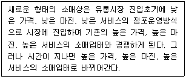
- 소매차륜가설(wheel of retailing hypothesis)
- 소매아코디언이론(retail accordion theory)
- 소매변증법적 과정(dialectic process)
- 소매진공이론(vacuum zone theory)
- 소매수명주기이론(retail life cycle theory)
(정답률: 알수없음)
63. 아래 글상자의 유통판매촉진 유형 중 가격판촉만을 나열한 것으로 가장 옳은 것은?
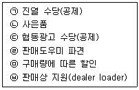
- ㉠, ㉢, ㉤
- ㉡, ㉢, ㉣
- ㉡, ㉣, ㉥
- ㉢, ㉣, ㉤
- ㉡, ㉤, ㉥
(정답률: 알수없음)
64. 오프라인 소매점포가 제한된 공간에서 매출과 이익을 극대화하기 위해 여러 가지 상품들을 고루 갖추어 놓는 것을 의미하는 용어로 옳은 것은?
- 재고관리
- 매입관리
- 상품구색관리
- 가격관리
- 진열관리
(정답률: 알수없음)
65. 가격차별화(price discrimination) 전략에 대한 설명 중 가장 옳지 않은 것은?
- 고객들이 싼 값에 사서 비싼 값에 되파는 일이 일어나지 않도록 하여야 한다.
- 학생, 노인 등 특정 집단을 대상으로 가격을 할인할 수도 있다.
- 택시요금처럼 기본요금에 사용요금을 부가하는 것을 이중요율(two-part tariff)이라고 한다.
- 일정한 시간대에 가격을 할인해주는 것은 할인시간가격(off-peak pricing)이다.
- 유보가격이 높은 집단에게는 낮은 가격을 제시하여 구매를 성사시키는 전략이다.
(정답률: 알수없음)
66. 아래 글상자의 괄호 안에 들어갈 고객관계관리와 관련된 용어를 순서대로 나열한 것으로 가장 옳은 것은?
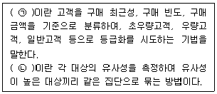
- ㉠ RFM분석, ㉡ 회귀분석
- ㉠ RFM분석, ㉡ 판별분석
- ㉠ RFP분석, ㉡ 군집분석
- ㉠ RFP분석, ㉡ 판별분석
- ㉠ RFM분석, ㉡ 군집분석
(정답률: 알수없음)
67. High/Low 가격(pricing) 전략에 대한 설명으로 가장 옳지 않은 것은?
- 충성고객을 위한 가격전략이다.
- 동일한 상품으로 가격에 탄력적인 고객과 비탄력적 고객 모두에게 소구할 수 있다.
- Low 가격전략은 고객을 자극하고, 모으는 효과가 있다.
- Low 가격전략은 판매가 부진한 상품에 대한 재고를 줄이는 데 있어 효과적이다.
- 제품 출시 시기의 High 가격전략은 고객에게 높은 품질에 대한 믿음을 제공하는 효과가 있다.
(정답률: 알수없음)
68. 마이클 포터(Michael E. Porter)의 본원적 경쟁전략 중 특정세부시장을 대상으로 비용절감에 집중하는 경쟁전략으로 옳은 것은?
- 차별화전략(differentiation strategy)
- 원가주도전략(cost leadership strategy)
- 집중차별화전략(differentiation focus strategy)
- 다각화전략(diversification strategy)
- 원가집중전략(cost focus strategy)
(정답률: 알수없음)
69. 목표시장선정을 위해 기업이 고려해야 할 요소로 시장잠재력이 있다. 아래 글상자의 내용을 이용하여 연간 총 사용량을 기반으로 한 시장잠재력을 계산한 것으로 옳은 것은?
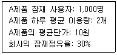
- 219만원
- 250만원
- 365만원
- 730만원
- 850만원
(정답률: 알수없음)
70. 서비스품질을 관리하기 위한 갭(Gap)분석 모형에 대한 설명으로 가장 옳은 것은?
- 갭(Gap) 1은 고객 기대에 대한 경영진의 인식과 서비스 표준설계와의 격차를 말한다.
- 갭(Gap) 2는 고객의 기대와 이에 대한 서비스기업의 인식 간의 차이에서 발생한다.
- 갭(Gap) 3은 고객에게 제공된 서비스가 그 서비스에 대한 외부 커뮤니케이션의 내용과 차이가 날 때 발생한다.
- 갭(Gap) 4는 서비스 표준과 고객에게 제공된 서비스와의 불일치에서 발생한다.
- 갭(Gap) 5는 고객이 기대하는 서비스와 실제로 서비스를 제공받고 인지한 것과의 차이에서 나타나는 격차를 말한다.
(정답률: 알수없음)
71. 해외시장에 진입하려는 소매업체가 그 지역 소매업체와 자원을 공동으로 이용하여 소유권, 통제권, 이익이 공유되는 새로운 회사를 설립하는 접근방식을 채택하는 경우, 이러한 접근방식을 의미하는 것으로 옳은 것은?
- 직접투자
- 전략적 제휴
- 가맹계약
- 합작투자
- 인수합병
(정답률: 알수없음)
72. 아래 글상자에서 설명하고 있는 매장의 레이아웃으로 가장 옳은 것은?
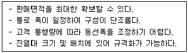
- 자유형 레이아웃
- 격자형 레이아웃
- 타원형 레이아웃
- 루프형 레이아웃
- 경주로형 레이아웃
(정답률: 알수없음)
73. 유통업체 브랜드(private brand)상품에 대한 설명으로 가장 옳지 않은 것은?
- PB상품은 불경기에 극빈층을 대상으로 무상표(generic)를 판매하는 것에서 시작되었다.
- PB상품은 소매마진이 큰 경우, NB와 PB상품 간의 가격차가 큰 경우 도입하게 된다.
- 유통업체의 규모가 크고 고품질의 PB상품을 개발할 능력을 가진 경우 도입하게 된다.
- 유통업체가 제조업체와의 제휴를 기반으로 PB상품의 기획, 설계, 개발단계에 참여하게 된다.
- PB상품의 경우 유통업체가 아닌 제조업체가 가격결정권을 가지고 있다.
(정답률: 알수없음)
74. 재고의 역할에 따른 분류 중 가장 옳지 않은 것은?
- 안전재고(safety stock): 수요의 불확실성에 대비하여 여유분으로 보유하는 재고
- 운송재고(transportation stock): 운송 또는 이동 중인 재고
- 예상재고(anticipation stock): 회사의 전략에 근거해서 보유하는 재고
- 로트사이즈 재고(lot size stock): 로트사이즈 크기로 인해 발생되는 재고
- 운용재고(operation stock): 목적에 맞게 충분히 활용하고 남은 재고
(정답률: 알수없음)
75. 아래 글상자에서 설명하는 용어로 가장 옳은 것은?
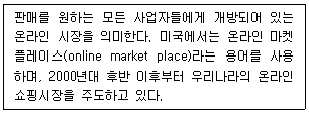
- 라이브커머스(live commerce)
- 모바일쇼핑(mobile shopping)
- 오픈마켓(open market)
- T커머스(T-commerce)
- 홈쇼핑(home shopping)
(정답률: 알수없음)
76. 고객을 대상으로 하는 마케팅 커뮤니케이션 과정의 구성요소에 대한 내용으로 옳지 않은 것은?
- 발신인: 다른 개인이나 그룹에게 메시지를 보내는 당사자를 말한다.
- 부호화: 전달하고자 하는 생각을 문자, 그림, 말 등으로 상징화하는 과정을 말한다.
- 메시지: 발신인으로부터 수신인에게 메시지를 전달하는 데 사용되는 의사전달 경로를 말한다.
- 해독: 발신인이 부호화하여 전달한 의미를 수신인이 해석하는 과정을 말한다.
- 반응: 메시지에 노출된 후 일어나는 수신인의 행동을 말한다.
(정답률: 알수없음)
77. 아래 글상자의 사례에서 제시된 고객충성도를 향상시키기 위한 효과적인 다빈도 구매고객프로그램으로 가장 옳은 것은?
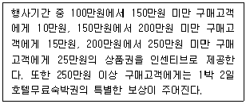
- 계층형 보상 제공
- 고객 생애가치에 따른 VIP 대우
- 자선활동과의 연계
- 보상에 대한 선택권 제공
- 선택된 상품의 모든 거래에 대한 보상 제공
(정답률: 알수없음)
78. 아래 글상자에서 설명하는 직원의 내재적 보상(intrinsic rewards)으로 가장 옳은 것은?
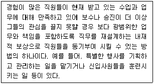
- 컨테스트(contests)
- 직무충실화(job enrichment)
- 할당 보너스(quota bonus)
- 인센티브 보상(incentive compensation)
- 현장연수(on the job training)
(정답률: 알수없음)
79. 브랜드 관리에 관한 내용으로 가장 옳지 않은 것은?
- 기존 브랜드와 동일한 상품 범주에 출시된 신상품에 기존 브랜드를 사용하는 것을 라인 확장이라고 한다.
- 브랜드 자산의 구성요소에는 주로 브랜드 인지도, 브랜드 연상, 브랜드 충성도, 지각된 품질 등이 있다.
- 브랜드 아이덴티티는 기업이 목표고객의 마음속에 심어 놓고자 하는 총체적 이미지를 구현하는 통합적 집합체이다.
- 공동 브랜드(family brand)는 브랜드 제품에 반드시 포함되는 원료, 소재, 구성품 등에 브랜드를 부여하는 것으로 사용료를 지불하고 이용한다.
- 브랜드 계층구조란 보통 기업 브랜드(corporate brand), 공동 브랜드(family brand), 개별 브랜드(individual brand), 브랜드 수식어(brand modifier) 등으로 구분된다.
(정답률: 알수없음)
80. 매입의 종류와 특징에 대한 설명 중 가장 옳지 않은 것은?
- 직매입은 상품의 인도 시점부터 소유권이 취득되고 재고관리 부담도 소매점에서 책임진다.
- 직매입에서의 반품은 상대방 책임에 의한 불량품, 주문이외 상품, 상거래 관습에 따라 인정되는 상품과 상대방 요청이 있는 경우에 가능하다.
- 특정매입은 소매점에서 일정 기간 동안 상품을 판매한 후 사전에 결정된 일정 비율의 수수료를 공제하고 지급하는 방식이다.
- PB(private brand)상품의 경우는 특정매입 형태가 일반적이며 재고의 부담을 제조업체가 갖게 된다.
- 임대을은 매월 고정 임대료가 아닌 매출액의 일정비율을 수수료로 지불하는 방식이다.
(정답률: 알수없음)
5과목: 유통정보
81. 상품식별코드 부여 기준에 대한 설명으로 가장 옳지 않은 것은?
- 세트상품(종류가 다른 복수상품)의 내용물 변화가 있는 경우 새로운 상품식별코드 부여
- 기존 상품의 체적정보 또는 총중량의 20% 이상의 변화 발생시, 새로운 상품식별코드 부여
- 기존 상품 브랜드가 변화한 경우, 새로운 상품식별코드 부여
- 기존 상품 포장의 인증마크 추가 또는 제거가 발생한 경우, 동일한 상품식별코드 부여
- 기존 상품의 경미한 디자인 변화가 있는 경우, 동일한 상품식별코드 부여
(정답률: 알수없음)
82. 아래 글상자의 괄호 안에 들어갈 용어를 나열한 것으로 가장 옳은 것은?
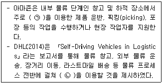
- ㉠ 자율주행트럭, ㉡ 무중단운행트럭
- ㉠ 무인이동체 로봇, ㉡ 드론
- ㉠ 쳇봇, ㉡ 원격조정트럭
- ㉠ 드론, ㉡ 무중단운행트럭
- ㉠ 무인이동체 로봇, ㉡ 자율주행트럭
(정답률: 알수없음)
83. 유통정보시스템 개발 과정에서 적은 비용으로 짧은 시간에 정보시스템의 일부 실험모형을 개발하고 사용자의 평가와 요구에 의하여 수정·보완해 가는 방법으로 가장 옳은 것은?
- 최종 사용자 참여 방법론
- 객체지향 방법론
- RAD 방법론
- 프로토타이핑 방법론
- JAD 방법론
(정답률: 알수없음)
84. 키워드 검색 쿼리를 전송하면 서버가 이를 받아 미리 지정한 포털 사이트들에 쿼리를 전송해 각 검색 사이트의 검색결과를 받아 사용자에게 보여주는 방식의 검색엔진으로 가장 옳은 것은?
- 시멘틱 웹 검색엔진
- 인덱스 검색엔진
- 주제별 검색엔진
- 디렉토리 검색엔진
- 메타 검색엔진
(정답률: 알수없음)
85. 데이터마이닝에서 사용되는 다양한 분석기법 중 아래 글상자의 사례에 해당하는 기법으로 가장 옳은 것은?
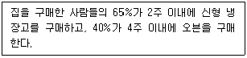
- 군집분석
- 분류분석
- 예측분석
- 연관규칙
- 순차패턴
(정답률: 알수없음)
86. 아래 글상자에서 설명하는 내용과 같은 현상을 지칭하는 용어로 가장 옳은 것은?
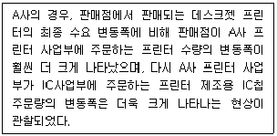
- 수확체증의 법칙
- 파킨슨 법칙
- 채찍효과
- 경제적주문량모형
- 수확체감의 법칙
(정답률: 알수없음)
87. GS1 표준기반 이력추적시스템 설계 시 검토해야 하는 요소들 중 성능 평가요소로 가장 옳은 것은?
- 타 시스템과 데이터의 호환성
- 이력추적 범위
- 상품의 세분화 정도
- 추적의 정확성 수준
- 공급망의 복잡성
(정답률: 알수없음)
88. 아래 글상자의 괄호 안에 들어갈 용어로 가장 옳은 것은?
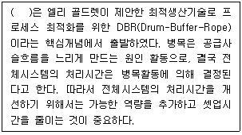
- 최적화이론
- 자원배분이론
- 제약조건이론
- 효율최적화이론
- 효율성이론
(정답률: 알수없음)
89. 핀테크(FinTech) 서비스에 대한 설명으로 가장 옳지 않은 것은?
- 핀테크 기술은 온라인 매장에서만 이용할 수 있는 첨단 금융기술이다.
- 핀테크는 클라우드 펀딩, 이체, 지불, 인증 등의 기능을 제공한다.
- 카카오 페이(kakao pay)는 대표적인 핀테크 서비스 성공 사례이다.
- 기업들은 핀테크 서비스 제공을 위해 다양한 기업들이 참여하는 비즈니스 에코시스템(business eco-systems)을 구축하고 있다.
- 금융(finance)과 기술(technology)이 결합한 서비스로 편리성과 보안에 대한 강화가 요구된다.
(정답률: 알수없음)
90. ERP시스템에서 SCM 모듈을 실행함으로써 얻을 수 있는 장점으로 가장 옳지 않은 것은?
- 공급사슬에서의 가시성 확보로 인해 공급 및 수요 변화에 대한 신속한 대응이 가능하다.
- SCM 파트너는 개선된 정보 투명성을 통해 재고수준을 줄이고, 재고회전율(inventory turnover)을 감소시킬 수 있다.
- 생산라인 및 유통채널에서의 선적지연은 공급사슬상의 비즈니스 파트너 간의 긴밀한 통합 및 협력을 통해서 해소될 수 있다.
- 고객 트렌드(customer trends) 파악을 용이하게 함으로써 고객 니즈(customer needs)에 유연하고 신속하게 대응할 수 있다.
- 실시간 비즈니스 분석과 더불어 정보의 투명성 확보로 인해 공급사슬상에서 관련 당사자들의 용역 및 서비스에 대한 현금화 주기(cash-to-cash cycle)를 단축한다.
(정답률: 알수없음)
91. 오늘날 유통업체에서는 보안성을 높이기 위해 물류관리분야의 정보시스템 구현에 있어서 블록체인(Blockchain)기술을 활용하고 있다. 이러한 블록체인 기술에 대한 설명으로 가장 옳지 않은 것은?
- 활용되는 목적에 따라 퍼블릭 블록체인(Public Blockchain), 프라이빗 블록체인(Private Blockchain), 컨소시엄형 블록체인(Consortium Blockchain)으로 구분하기도 한다.
- 퍼블릭 블록체인(Public Blockchain)은 누구나 접근 가능하고 안정적이며 신뢰성이 높다.
- 프라이빗 블록체인(Private Blockchain)은 허가받은 이용자만 접근 가능하며 기업별 특화가 가능하다.
- 퍼블릭 블록체인(Public Blockchain)은 프라이빗 블록체인(Private Blockchain)에 비해 확장성이 좋고 거래속도가 빠르다.
- 컨소시엄형 블록체인(Consortium Blockchain)은 반중앙형 블록체인으로 사용자별 권한 부여 차별화로 민감한 정보관리가 가능한 장점이 있다.
(정답률: 알수없음)
92. 유통업체에서 업무 혁신을 위해 도입하고 있는 RPA(Robotic Process Automation) 시스템에 대한 설명으로 가장 옳지 않은 것은?
- 고객과 관련된 반복적인 질의에 대응하는 업무를 정해진 규칙에 따라 처리할 수 있도록 자동화시켜 준다.
- 업무처리 속도가 매우 빠르고 업무 효율성이 매우 높다.
- 최근 데이터에 기반한 학습을 통해 스스로 의사결정을 할 수 있는 인공지능 기술이 RPA 시스템에 이용되는 추세이다.
- 음성 변환 기술을 활용해서 보다 많은 고객들의 요구사항에 효율적으로 응대할 수 있도록 발전하고 있다.
- 설계적 오류나 병목현상 발생 시, 자동으로 프로세스를 변경할 수 있으며, 다양한 요구에 유연하게 변경가능하여 복잡한 업무 자동화에 적합하다.
(정답률: 알수없음)
93. 공급사슬관리를 위한 RFID 기술에 대한 설명으로 옳지 않은 것은?
- RFID 기술은 무선 네트워크를 이용해 제품에 부착된 태그의 IC칩에 저장된 고유정보를 안테나와 리더를 통해 비접촉식 방식으로 수집할 수 있다.
- 능동형 태그는 배터리가 내재되어 있다.
- 수동형 태그는 능동형 태그에 비해 고가이며, 원거리에서 활용가치가 높다.
- RFID 기술은 공급사슬에서 태그가 부착된 제품의 이동경로를 추적관리할 수 있다.
- 기술발전에 따라 태그 비용이 낮아지고 있고, 이에 따라 기업들은 효율적 유통관리를 위해 RFID 기술 도입에 보다 많은 관심을 가지게 되었다.
(정답률: 알수없음)
94. 빅데이터를 구축하는데 있어 데이터를 수집하고 정제하고 저장하며 유지관리하는 전 과정에 걸쳐 데이터의 품질관리는 중요한 이슈이다. 데이터 품질관리를 위한 지표에 대한 설명으로 가장 옳지 않은 것은?
- 완전성: 데이터 저장소인 DB를 구축함에 있어 논리적설계와 물리적 구조를 갖추고, 업무 요건에 맞게 데이터가 저장되도록 설계·구축 되었는지를 진단하는 지표
- 정확성: 데이터가 실세계 사실 및 업무규칙에 맞게 정확한 값이 저장되어 있는지를 진단하는 지표
- 유효성: 사용자가 원하는 시점에 데이터의 주기에 따른 가장 최신 데이터를 유지하는지를 진단하는 지표
- 접근성: 사용자가 원하는 데이터를 손쉽게 사용할 수 있는지를 진단하는 지표
- 일관성: 같은 의미를 갖는 데이터는 표준을 준수하여 동일한 용어와 도메인으로 정의하고 중복, 연계 데이터의 값이 서로 일치하는지를 진단하는 지표
(정답률: 알수없음)
95. 구매업체(유통업체) 측면에서 공급자재고관리(VMI)의 이점에 대한 설명으로 가장 옳지 않은 것은?
- 구매업체(유통업체)는 안전재고를 보유할 필요성이 감소됨
- 구매업체(유통업체)는 낮은 수준의 재고 보유로 인해 원가절감이 가능해짐
- 구매업체(유통업체)는 적시에 적합한 제품을 가짐으로써 총서비스 수준을 개선함
- 구매업체(유통업체)는 업무처리에 있어서 문제 발생시에 책임이 상대기업에게 이전됨에 따라 계획 및 주문 관련 비용을 줄일 수 있음
- 구매업체(유통업체)는 판매시점관리시스템 활용으로 데이터 가시성이 확보되어 생산계획 수립을 위한 개선된 수요예측이 가능해짐
(정답률: 알수없음)
96. 아래 글상자의 내용에 부합하는 모바일 결제방식의 종류로 가장 옳은 것은?
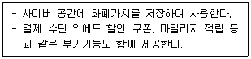
- 전자 지갑
- 모바일 뱅킹
- 휴대폰 결제
- 모바일 간편결제
- 모바일 신용카드
(정답률: 알수없음)
97. 마이클 포터(Michael Porter)의 가치사슬 모델에서 주활동을 지원하는 보조활동에 해당되는 것으로 가장 옳은 것은?
- 인적자원관리
- 내부 물류
- 외부 물류
- 판매 및 마케팅
- 고객 서비스
(정답률: 알수없음)
98. 유통업체의 통합정보자원관리를 위한 ERP 시스템 구현과정에서 중요한 데이터 마이그레이션에 대한 설명으로 가장 옳은 것은?
- 데이터 추출: 레거시 시스템의 데이터베이스에서 데이터를 꺼내는 작업이다.
- 데이터 정제: 새로운 도메인의 데이터를 레거시 시스템에 추가하기 위한 작업이다.
- 데이터 수집: 데이터를 새로운 ERP 시스템으로 옮기는 작업이다.
- 데이터 일치: 데이터를 ERP 시스템에서 사용할 수 있도록 수정하는 작업이다.
- 데이터 운반: 외부로부터 유입된 데이터를 기업 표준으로 변환하는 작업이다.
(정답률: 알수없음)
99. 아래 글상자에서 설명하고 있는 최신기술 용어로 가장 옳은 것은?
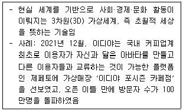
- 가상현실(Virtual Reality)
- 혼합현실(Mixed Reality)
- 메타버스(Metaverse)
- 증강현실(Augmented Reality)
- 매쉬(Mesh)
(정답률: 알수없음)
100. 아래 글상자에서 설명하는 내용을 뜻하는 용어로 가장 옳은 것은?
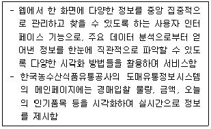
- 스토리프레임
- 스토리보드
- 통계보고서
- 인포메이션
- 대시보드
(정답률: 알수없음)